第九章 地雷制造法
1 概 述
抗战时期，地雷用途极为广泛，也是大量使用的爆破器材之一，用于敷设在公路或铁路上，炸毁敌人的汽车、火车及杀伤人马。
战争年代所制造的地雷种类很多，如拉发地雷、跳雷和子母雷等。在重量上有数百克的小地雷，也有二十余公斤的大地雷。雷体装药主要是用周氏炸药和硝酸铵类炸药，也应用过黑火药。地雷壳体所用的材料，更是花样繁多，除大量使用铁壳外，也用过石壳、木壳，还用过铁壶、铁罐、木箱和木匣等。
在对敌斗争中，地雷遍布全村和四野，敌人走大路，大路炸；走小路，小路炸；走山坡路，山坡路也炸。使敌人寸步难行，大大地限制了敌人的活动。
地雷的构造不太复杂，可以直接或间接地动员群众参加生产。其使用方法也比较简单，除供给正规部队使用外，也大量地供应地方武装和民兵。充分地利用当时当地的物质条件，使原材料完全立足于解放区；制造方法也符合战时客观条件，做到了花样多、数量大，并达到了“村村有雷”的要求。
2 地雷的分类及用途
抗战时期，制造过各种型式的地雷，其中以反步兵地雷和子母雷的产量最大，防运输地雷次之，其他种类数量较少。
地雷按用途可分为：
-
反步兵地雷——用于杀伤散兵，成组使用时可杀伤敌群。这种地雷尺寸较小，装药量在500克以下，壳体材料可用石壳、木壳和铁壳等。发火方式为压发或拉发。
-
反步兵子母雷——用于杀伤敌群。子母雷爆炸时，产生的破片较多，装药量在1~1.5公斤。壳体材料为铸铁，发火方式多采用压发。
-
防运输地雷——用以炸毁汽车、马车或摩托车等各种车辆，并具有尒伤作用。装药量为2～5公斤，壳体材料为铁壳。发火方式多为压发，也可用拉发。
-
防坦克地雷——用于炸毁坦克和装甲车辆。壳体材料为铁壳，装药量为5～8公斤，发火方式多用压发。
-
反铁路运输地雷——这种地雷埋设在铁轨下，用于炸毁铁路机车和车辆。壳体材料为铸铁，装药量为15～20公斤，发火方式为压发。
-
特种地雷——诡雷和跳雷等，以杀伤人马为主。
从发火方式上来分：
-
压发发火。此种地雷敷设在地下或在地面上伪装敷设。在一定重量的作用下，立即爆炸。敷设后不须人工操纵。
-
拉发发火。此种地雷敷设后需要人工操纵(但诡雷例外)，待目标进入地雷威力圈后，一经拉火即行爆炸。
从壳体材料上来分：
-
铁壳地雷——壳体为铸铁；
-
石壳地雷——各种石头(圆形的或方形的)；
-
木壳地雷——壳体由木板制成。
3 地雷的构造
地雷虽然种类很多，但就其构造而言，主要是由壳体、炸药和发火机构三个主要部件组成。
(一) 压发地雷
铁壳压发地雷，其壳体为铸铁，发火机构采用压发或拉发，
地雷的尺寸和装药可根据用途决定。铁壳压发的构造如图97所示。
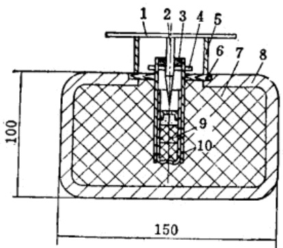
铁壳地雷的壳体材料；一般是采用铸铁。壳的形状，有方形的、长方形的和圆形的等(图98、99、100)。
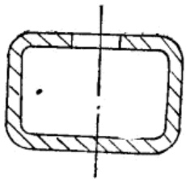
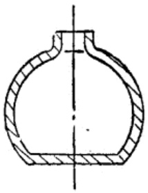
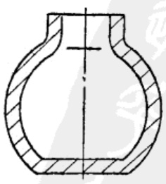
铁壳的来源，十分广泛，除工厂自行制造外，也广泛地利用民间铸造设备，大量铸造铁壳。也利用不少生活用具如铁壶、铁罐和小铁匣子等各种各样的铁容器做为雷壳。
当地雷的压盖上受到一定重荷的压力时，薄纸板支撑受压变形，击针将切断销切断，击针击发雷管而引起地雷爆炸，这是铁壳压发地雷的发火原理。
石壳压发地雷在全面抗战运动时期，用途极广，数量极大。达到了“村村有雷”。石壳材料到处都有，解放区的男女老少，都能做石雷壳。
它在构造上与发火原理和铁壳压发地雷完全相同，只是壳体材料有所不同。
石头可以选方形的也可以选圆形的，将石头底部和口部用工具凿一个空腔，装入炸药和发火元件即成为地雷。这种地雷，由于壳体材料是石头，便于伪装。石壳压发地雷的构造如图101所示。
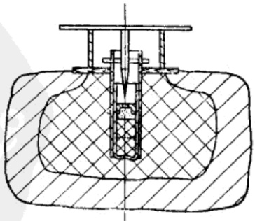
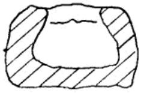
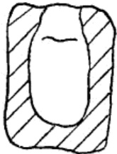
(二) 拉发地雷
拉发地雷，其雷体及装药与压发地雷相同，壳体可采用木壳、石壳和铁壳等。壳内装药均系周氏炸药或硝铵炸药(图104、105、106)。
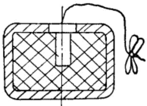
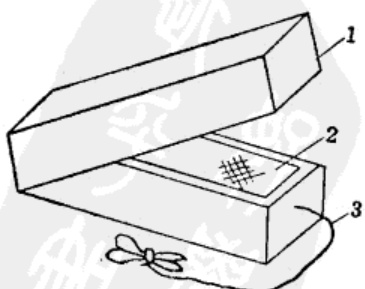
压发地雷只要受到重荷作用，即可发生爆炸。拉发地雷则是依靠人来操纵，当地雷敷设后，由操作者用拉线控制，当目标进入布雷区的威力圈内，立即拉绳，使发火机构发火，引起爆炸。拉发的优点是命中率高，但需要人工来操纵。压发虽然命中率较差，但事先经过对敌情做详细的调查研究，机动灵活的进行埋设，命中率还是很高的。
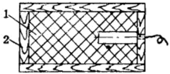
(三) 子母雷
子母雷用于杀伤敌人的散兵群，它的特点是爆炸威力大和破片多。
它的壳体，一般均采用铸铁壳，也用过木壳，很少用石壳。发火机构采用压发或拉发。
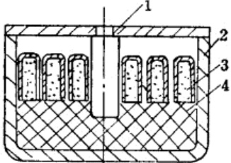
它是由一个大雷及若干个小雷所组成。雷中装入周氏炸药或硝铵炸药。小雷的形状和尺寸可以任意选定。小雷在大雷体中的排列，可以用直列法，也可以倾斜一定角度(如图107、108、109)。通常均采用倾斜30°～45°角，这样的排列法，杀伤破片分布的半径大。
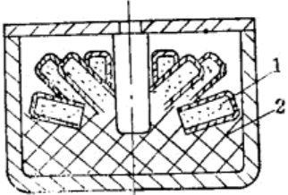
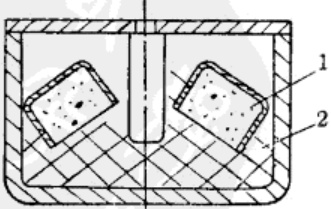
(四) 跳雷
跳雷是特种地雷中的一种，它的特点是当压发或拉发后，立即跳离地面，距地面约1米高爆炸。这样，杀伤力比同样装药的地雷要大得多，也具有较大的威胁性。其构造如图110所示，在
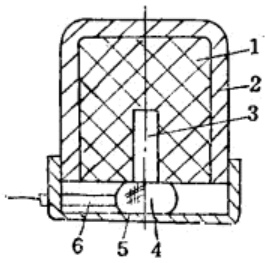
地雷的下部装一个托套，在托套里放入一个发射药包，药包内的装药采用黑火药粉或者无烟发射药。药量的多少，根据地雷的重量，临时试验决定。
跳雷拉发后，拉火管立即发火，引起药包中的黑火药燃烧，将地雷抛出地面，同时也点燃雷管中的导火线，当导火线燃尽时就引起雷管的爆炸(采用黑火药抛射时，雷管中可不加导火线)，从而使地雷在距地面一定高度时爆炸。
4 地雷的发火机构
发火机构，又称为发火件，根据使用方法和构造的不同，分为压发发火机构和拉发发火机构两种。
(一) 压发发火机构
压发发火机构是由雷管(或导爆管)、金属(铁)套管、切断销、纸圈及压板等组成。
压发发火机构在安定状态时，是由一根金属切断销(又称保险销)穿过套管孔和击针的中心，以防止击针受压力时冲击雷管。因此，不受压力时它能保持安定的状态(如图111所示)。
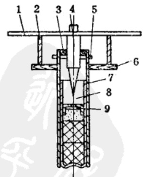
当人、车、马或其他重荷圧在圧板上，压力超过保险销所能承受的压力时，保险销被切断，击针突然下落，冲击雷管(或导爆管)，使雷管爆炸，引起地雷中的炸药爆炸。
纸制支撑圈的作用是托衬压板，使压板与盖板之间有一定空隙，以免在敷设时，土壤进入压板与盖之间，影响缶针下落。因此，支撑圈不宜用金属材料制作。
切断销应保证在敷设及伪装地雷时操作安全，当受一定重量作用时应立即切断。因此保险销在制造时，所采用的材料和直径的大小，需事先经过试验，一般选取切断销在承受重量13公斤以下时，不应切断，承受15公斤以上的重量时应该立即切断。切断销的材料最好采用脆性较大的材料(如黄铜)。
套管用于固定雷管和击针，并承受一定的荷重，它采用金属材料较适合。套管的大小以能装入雷管或导爆管为宜。
另外，压发机构中所使用的雷管，无论是纸壳或者是铜壳，当雷管装药时，在加强帽内须事先加入一个厚度为0.1～0.6毫米的铜垫。这样，当击针下落时，先穿透铜垫，使击发药所承受压力突然增加，可以提高击发药对冲击作用的敏感度。
除上述切断销式的保险发火机构外，也采用过不少钢珠保险的压发机构(如图 112 所示)。
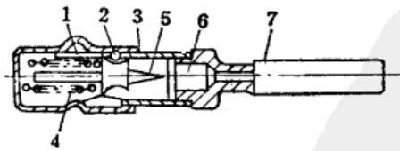
压发机构由外套、镧珠、衬套、弹套、击针、火帽和雷管组成。平时由于镧珠的保险作用，击针不能下落。当外套受压时，套管前移，凹槽接近镧珠，在弹簧的作用下，镧珠被击针推出衬套管孔而落入外套的凹槽中，释放击针，在弹簧的压力下，击针向下截击火帽发火，引起雷管的爆炸。
图112. A所示的发火机构，亦是镧珠压发机构的一种型式。这种发火机构是用于炸毁火车的地雷上，它可以定点的炸毁任何一节车厢。
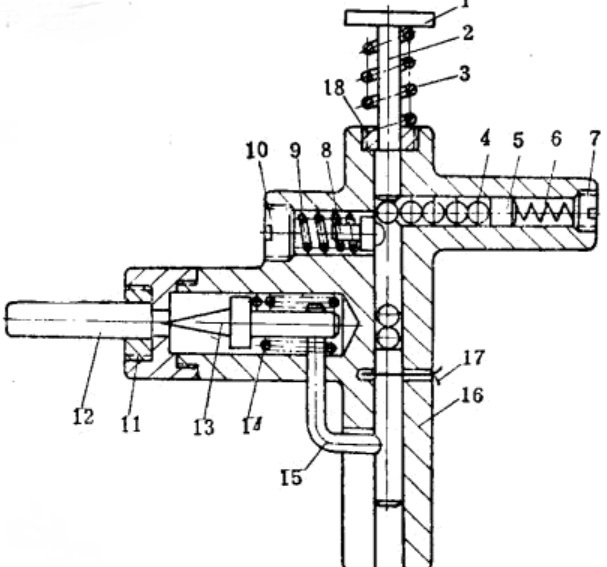
1944年式炸火车用定点爆炸地雷敷设后，火车车轮通过压板1，圧缩弹簧3，圧杆2下落，钢珠4圧缩保险销8，后落入槽体16中。依次作用，当槽内空隙填满时，车辆通过圧板，将切断销17切断，使保险插销15向下移动，击针13被释放，在弹簧14的作用下，冲击雷管12，引起整个雷体爆炸。
使用定点爆炸地雷的发火机构之前，要对目标调查清楚，根据目标所在位置调整待压入钢珠的数量。发火件上的雷管，当敷设地雷时，才与发火机构连接，避免由于运输等原因而造成事故，这种发火机构构造简单、作用准确。
(二) 拉发发火机构
拉发机构的形式很多，图 113 所示就是拉发机构中的一种，它是由击针、销子、弹簧、套管、火帽及雷管所组成。在敷设地雷时，将拉绳拴在销子的环上，拉火时把销子拔出，在弹簧的作用下，击针下落，冲击火帽发火，点燃雷管引爆地雷。
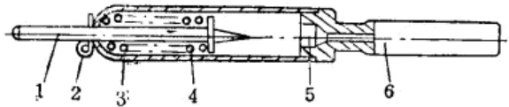
除上述形式的拉火外，更多的是采用拉火帽的发火方法。这种机构是由雷管(或导爆管)、套管和拉火帽组成(如图 114 所示)。
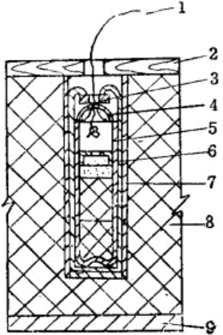
当拉动拉火绳，拉火帽受摩擦而发火，引起雷管爆炸，导致地雷装药的爆炸。
拉火的结构是在金属套管里，装入一个纸(或铜)壳火雷管或导爆管，在雷管的端部装置一个带有拉火丝的拉火帽，为固定拉火帽，在它的上面，垫以厚纸垫，再将套管收口，使火帽、纸垫和雷管紧密的配合。拉火帽的尺寸与雷管尺寸相配合。拉火帽的装药及制造方法与手榴弹用拉火帽相同。
5 导爆管制造
在地雷中，装药材料多是周氏炸药或硝铵炸药。因地雷通常装药数量较多，只靠雷管起爆，往往起爆力不够，产生爆炸不完全的情况，因此，一般需要装置扩爆药(如图 115)。
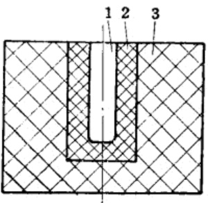
扩爆药通常是采用特屈儿或梯恩梯，并压制成药柱，当雷管引爆，引起扩爆药爆炸，扩爆药爆炸产生较大的起爆能量，引起整个装药的爆炸。尤其是当壳体内装填敏感性较低的硝铵炸药时，更需要扩爆材料。
抗战时期，是采用导爆管代替特屈儿等扩爆材料。导爆管的扩爆性能良好，它的类型和尺寸，可依据地雷的大小和装药材料的种类不同而选择。当时曾制造过三种型号的导爆管，即1号、2号、3号。制造导爆管的方法是，用牛皮纸卷制一个纸管，卷管的方法与卷纸管的方法相同。纸管卷成后在底部糊上纸垫，在管体内装入炸药，在炸药的上面，垫以纸垫，再装入一定量的小雷管。导爆管的构造如图116所示。
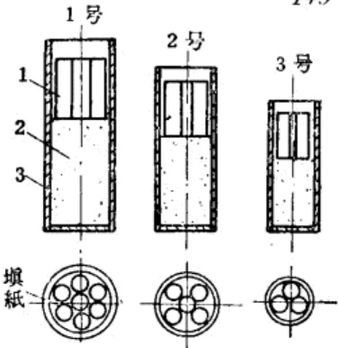
导爆管中所装填的炸药是硝化甘油与麻杆炭粉的混合物。
导爆管的尺寸及装药量如表 30 所示。
| 规格和装药 导爆管号数 | 管壳尺寸 | 硝炭混合物成分 | 导爆管内装炸药量(克) | 导爆管内装入的小雷管数(个) | ||
| 长度(毫米) | 直径(毫米) | 硝化甘油% | 麻杆炭粉% | |||
| 1号导爆管 | 120 | 45 | 50 | 50 | 150～200 | 7 |
| 2号导爆管 | 100 | 35 | 50 | 50 | 80～120 | 5 |
| 3号导爆管 | 80 | 25 | 50 | 50 | 30～60 | 3 |
导爆管中所装填的炸药，如不采用硝炭混合物，也可用梯恩梯或苦味酸。导爆管中所使用的小雷管与纸火雷管相似，只是尺寸略小一些。
导爆管分别应用于各种地雷的发火机构中，根据地雷的装药量大小，选配导爆管。当时的选配情况如表31所示。
| 地雷装药重量 (公斤) | 地雷装药种类 | 选用导爆管号数 |
|---|---|---|
| 0.5～2 | 周氏炸药或硝铵炸药 | 3号导爆管 |
| 2～5 | 周氏炸药或硝铵炸药 | 2号导爆管 |
| 5～20 | 周氏炸药或硝铵炸药 | 1号导爆管 |
注：装药量在0.5公斤以下的地雷可不用导爆管。
6 地雷装药装配
(一) 装药种类
地雷中可装入的炸药品种很多，根据当时的条件，有什么材料就装什么药，曾大量使用周氏炸药或硝铵炸药，尤其是以硝化甘油为敏感剂的硝铵炸药用量最大，也装过不少黑火药。根据使用效果来看，宜采用下列成分(表32)：
| 地雷种类 组成物% 组成物名称 | 1公斤地雷 | 2公斤地雷 | 5公斤地雷 | 10公斤地雷 | 15公斤地雷 | 20公斤地雷 | 备注 |
| 硝酸铵 | 83 | 83 | 81 | 81 | 81 | 81 | 硝化甘油用量最大不超过4% 无此炸药时，可适当增加木粉量 谷糠粉可用木粉代替 |
| 硝化甘油 | 2 | 2 | 4 | 4 | 4 | 4 | |
| 硝化卫生球 | 10 | 10 | 10 | 10 | 10 | 10 | |
| 谷糠 | 5 | 5 | 5 | 5 | 5 | 5 |
(二) 装药量
地雷中装药量的多少，与地雷种类有关，当时所采用的装药数量如表 33 所示。
| 序号 | 地雷种类 | 炸药种类 | 装药量(公斤) | 壳体材料 | 导爆管号数 |
|---|---|---|---|---|---|
| 1 | 反步兵地雷 | 周氏炸药或硝铵炸药 | 0.5～1 | 铁壳、石壳、木壳 | 3号导爆管 |
| 2 | 反步兵子母雷 | 周氏炸药或黑火药 | 1～1.5 | 铁壳 | 3号导爆管 |
| 3 | 防运输地雷 | 周氏炸药或硝铵炸药 | 2～5 | 铁壳、木壳 | 2号导爆管 |
| 4 | 防坦克地雷 | 周氏炸药或硝铵炸药 | 5～8 | 铁壳 | 1号导爆管 |
| 5 | 防火车运输地雷 | 周氏炸药或硝铵炸药 | 15～20 | 铁壳 | 1号导爆管 |
| 6 | 跳雷 | 周氏炸药或黑火药 | 0.5～1 | 铁壳、石壳 | 3号导爆管 |
(三) 装药方法
地雷的装配分为两个步骤进行，即壳体装药和全备雷装配。通常当立即使用时，才对地雷进行全备装配。长期储存时，是将发火机构单独的包装，待敷设地雷时，现场装配。这样在运输或保管时比较安全。
地雷壳的装药方法有注装、压装和散装三种。注装是将炸药熔化后注入壳体内。它对炸药的要求条件为：
-
炸药的熔点低于130℃；
-
在温度130℃时加热2小时，炸药不分解。适合上述条件的炸药有梯恩梯和苦味酸。
压装是将药粉压成药柱，除炸药性能要符合压药条件外，还需要油压机或水压机等设备。
散装则多采用周氏炸药和硝铵炸药。散装法的操作如下：
-
雷壳清理：雷壳装药前要检查内外表面是否清洁和完整，再用小毛刷把雷壳刷干净。
-
雷壳内表面涂漆和晾干：如采用铁壳，为防止药与金属直接接触，最好在药室里涂上一层沥青或虫胶漆。经干燥(自然晾干)后，送去装药。
-
装药：装药的方法有两种。10公斤以上的地雷装药时，先将炸药用油纸包成数个小包，每包1~2公斤，然后整齐地放入雷管中。另一种方法是，无论是大雷或小雷，先将雷壳和炸药准备好，用小铲子将炸药装入壳内。装药的同时用木棒将炸药捣平。捣炸药时，要轻压平，不要用力过猛，更避免与壳体摩擦，装填炸药时留出装发火机构的孔。
-
雷体清理和装上防潮塞：装好药的雷体，用抹布把表面擦拭干净，将上盖盖好，在装发火机构的孔内装上一个木制的防潮塞。在可能的条件下，一般均在炸药的表面涂上一层25～40%的酒精虫胶漆，也曾在炸药的表面上放置一张油纸，主要是为了防潮。
装好的地雷与发火机构一起配套，装入包装箱内，存放在干燥地点或直接送去使用。
flowchart TD
A[雷壳准备] --> B[雷壳清理]
B --> C[雷壳内表面涂漆]
C --> D[雷壳涂漆后自然晾干]
D --> E[雷壳装入炸药]
F[炸药准备] --> G[炸药称量]
G --> E
E --> H[雷体清理]
I[木头防潮准备] --> J[雷体装上防潮塞]
H --> J
J --> K[成品]7 地雷的敷设
抗战时期，地雷的使用方法繁多，方法巧妙，除伏击敌人，封锁交通和破坏工事外，也曾用来大摆地雷阵。由于运用灵活，均收到了预期的效果，有力地打击了敌人。概括起来可分为室内敷设、特种敷设和地面敷设。
(一) 封锁交通布雷
地雷用于封锁交通时，通常敷设在村口、大路或小路上。敷设前应对敌人的行动，有较详细的了解，一般是在应用前几小时进行敷设。由于地雷没有防潮性能，所以不能敷设在有水的地方。
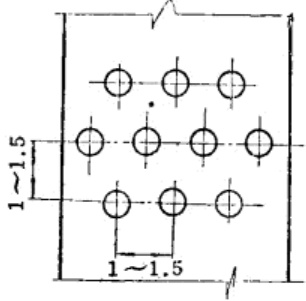
敷设时，地雷的上面要很好的伪装，如采用压发地雷，地雷上面的复土总重量不应超过 10 公斤，以免在敷设时发生危险。
封锁道路时，地雷可单个的使用，但一般都是成组使用。每个雷间距保持1～1.5米，星罗棋布，使敌人难以捉摸，寸步难行。大路、小路、村口或山坡可能出现敌人的地方，均可设雷。公路布雷方法如图117所示。
(二) 封锁铁路布雷
封锁铁路，主要是炸毁机车或车辆，断绝交通和缴获物资。炸毁机车的地雷较大，装药量在15～20公斤，发火方式多采用拉发但也可以采用压发。拉发时可将地雷敷设在轨道的下面，最好布在铁轨与两个枕木之间，当机车通过时，由人工操组，拉动绳子使地雷爆炸。
布雷时拉绳一定要从铁轨的下面穿过，否则，机车通过时把绳子压断，起不到应有的作用(如图 118 所示)。
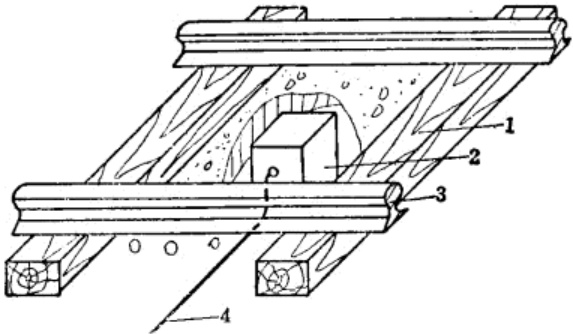
采用压发时，雷应布在铁轨的下面(两枕木之间)，当机车通过时压爆。为了确保作用，在炸毁机车或封锁铁路时，一般可将两个以上的压发地雷布设在一起(如图 119 所示)。
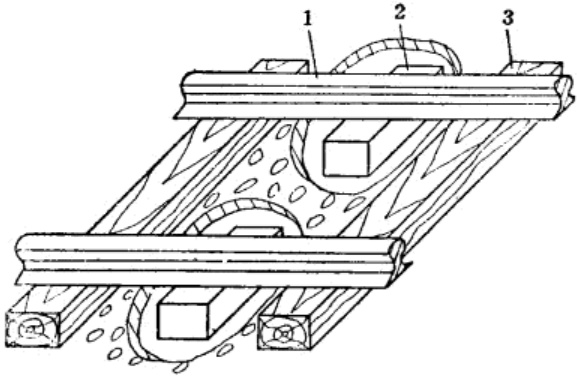
(三) 室内布雷
在敌人可能搜索或利用的房屋内进行布雷，地雷可敷设在门口、箱子里或锅里，敌人一推门就爆炸，一掀锅也爆炸，到处都在爆炸，处处都可能爆炸(图120、121)。
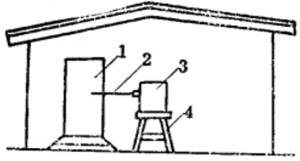
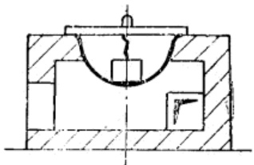
(四) 特种布雷
特种布雷的方法更是繁多，用这种方法布雷时，要充分利用地形和环境条件，如图 122、图 123 和图 124 即为其中几个示例。
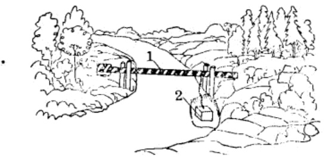
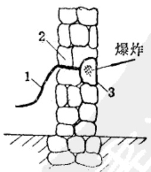
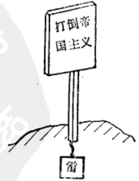
地雷的敷设要因地因时制宜，到处设置，使敌人如入天罗地网。